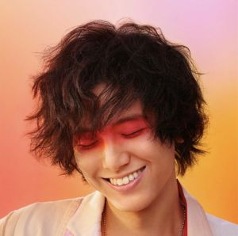

Amane
후지이 카제 Fujii Kaze
선정 이유
내가 슬프거나 우울할 때, 위로를 받고 싶을 때 가장 많이 듣는 노래가 후지이 카제의 노래이다. 후지이 카제는 다양한 장르가 융합된 독특한 멜로디와 귀에 착착 감기는 부드러운 목소리, 마음에 와닿는 가사로 일본 내에서 엄청난 인기를 끌고 있다. 나는 후지이 카제 노래 중에서 "돌아가자"라는 노래를 제일 좋아한다. "돌아가자"는 삶과 죽음에 대한 노래이다. 가사를 음미하며 들을 때마다 어떻게 살면 좋을까 를 생각하게 해주는 노래라서 자주 듣는다. 국적을 넘어 더 많은 사람들이 후지이 카제의 노래를 들어볼 기회가 있었으면 좋겠다는 생각에 주제로 선정하였다.
정보
- 이름:藤井風(후지이 카제, Fujii Kaze)
{kind=link}
| 「憎みあいの果てに何が生まれるの わたし わたしが先に忘れよう」 -서로 미워하면 뭐가 생겨나겠어 내가 내가 먼저 잊어버릴게 - | ||
| -帰ろう(돌아가자)-가사 |
| 「孤独なんて幻想 気にしなきゃいいの 」 -고독이란 환상 신경쓰지 않으면 돼 - | ||
| -Lonely Rhapsody(론리 랩소디)-가사 |
- 출생:1997년 6월 14일(25세), 오카야마현 아사쿠치군 사토쇼정
- 국적:일본
- 신체:181cm, B형
- 직업:싱어송라이터,뮤지션, 피아니스트, 작사가, 작국,유튜버
- 장르:J-POP, R&B, 재즈, 클래식,가요
- 데뷔:2019년1st앨범 EVER HURT NEVER』
- 소속사:HEHN Records/ UNIVERSAL SIGMA(2019~)
- SNS:藤井風OFFICIAL SITE, Fujii Kaze藤井 風instagram
경력
1997년~2018년
오카야마현 아사쿠치군 사토쇼정에서 4남매의 막내로서 태어난다. 3살 때부터 피아노를 배우기 시작하여 재즈, 클래식,가요팝, 연가 등 다양한 장르의 음악을 접해 왔다. 초등학생이었던 2010년1월1일, "앞으로는 유튜브의 시대가 올 것"이라는 아버지의 권유로 유튜브에 피아노 커버 영상을 올리며 처음 활동을 시작했다. 피아노뿐만 아니라 엘렉톤과 섹소폰연주에도 능숙하며 2012년(당시 15살)에는 찰리 파커의 명곡 Donna Lee의 색소폰 연주 동영상을 올리기도 했다.
중학교 졸업 후 오카야마성동고등학교 음악학부에 입학하여 음악에 푹 빠진 나날을 보냈다. 고등학교 시절에는 유튜브활동을 중단했지만 중고등학교를 졸업하고 성인이 될 때까지 유튜브에 영상을 올리며 피아노 어레인지 커버 유튜버로서 활동하였고, 2018년 말부터 본격적으로 여러 페스티벌 등에 출연하며 점점 이름을 알렸다.
2019년~2020년
2019년 2월 도쿄로 상경, 5월에는 뉴욕으로 떠난다. 귀국 후 2019년 여름에는 첫 단독 라이브「Fujii Kaze "JAZZ&PIANO" The First」를 개최, 같은 해 11월 유니버설 레코드를 통해 첫 디지털 싱글로 자작곡 '何なんw(뭐야ㅋ)'을 발표하며 싱어송라이터로서 데뷔했다. 12월에는 ‘もうええわ’(Moueewa)를 잇달아 발표한다. 데뷔 이후에도 유튜브를 통해 뮤직비디오와 퍼포먼스 영상, 라이브 스트리밍을 꾸준히 공개하며 TV 프로그램 등 주류 매체에 출연을 제한하며 새로운 플랫폼으로 활동을 이어나가는 모습을 보인다. 2020년 12월아시안 뮤직 어워드 2020에서 베스트 뉴 아시안 아티스트 재팬 부문을 수상했다. 12월 25일, 자신의 첫 전국 홀 투어 'Fujii Kaze HELP EVER HALL TOUR를 시작했다. 이듬해 1월 말까지 11개 도시 총 12회 공연을 개최했다.
{kind=link}
2021년
2021년5월3일에 8번째 싱글로 발매된 きらり(반짝)가 Honda・VEZEL의 새로운 광고송으로 기용되어 일본 내에서 인지도를 높이는 계기가 되었다.
_)_China_(10).jpg){kind=link}
2021년9월4일 일본 최대의 공연장 닛산 스타디움에서 "Free" Live 2021이라는 타이틀로 무관중 공연을 개최했다. 2021년에는 데뷔 이후 2년 만에 처음으로 제72회 홍백가합전에 출장하였다. 자택에서 원격 촬영으로'きらり'를 선보인 후 갑자기 카메라를 옮겨 사실 촬영 스튜디오인 도쿄국제포럼에 깜짝 등장한 뒤 '燃えよ'를 불러 자신의 차례를 마쳤다. 또한 후지이 카제가 처음으로 다른 아티스트에게 제공(작사, 작곡)한 곡 'Higher Love'를 MISIA 가 부르며 후지이 카제는 피아노 반주와 코러스를 맡았다.
2022년
2022년3월9일 제72회 일본 문화청 예술선장문부과학대신상 대중예술 부문 신인상을 수상했다. 또 같은 날 SPACE SHOWER MUSIC AWARD 2022에서 BEST SOLO ARTIST 부문, BEST CONCEPTUAL LIVE 부문, PEOPLE'S CHOICE 부문의 3관왕을 차지했다. 3월23일 2nd 앨범 'LOVE ALL SERVE ALL' 발매하며 이 앨범은 이듬해 3월2일 '제15회 CD샵 대상 2023'에서 대상 수상작 <레드>를 수상했다. 7월 후반 틱톡을 통해 '死ぬのがいいわ(죽는 게 나아)'태국을 시작으로 베트남, 말레이시아,싱가포르,인도네시아,필리핀,홍콩,대만, 한국 등 아시아권과 중동권을 넘어 스포티파이의 글로벌 바이럴 차트인 되었다. 제73회 홍백가합전에 2년 연속으로 출연하여 '死ぬのがいいわ(죽는 게 나아)'를 불렀다.
2023년~
4월17일 자신의 첫 해외 공연인 아시아 투어 Fujii Kaze and the piano Asia Tour 2023'을 6월부터 7월까지 개최한다고 발표하였다.
{kind=link}
6개 도시 총 8회 공연할 예정이며, 2023년 6월 24일 광운대학교 동해문화예술관 대극장에서 내한공연이 확정되었다. 이번 공연은 아시아투어 일환으로 오직 피아노 한 대로만 진행된다고 한다.
디스코그래피
디지털 싱글
- 2019년
11월18일_1ST 何なんw (Nan-Nan / 뭐야ㅋ) / 12월24일_2ST もうええわ (Mo-Eh-Wa / 이제 됐어)
- 2020년
4월14일_3ST 優しさ(Yasashisa/상냥함) / 5월15일_4ST キリがないから(끝이 없으니까) / 10월30일_5,6ST 青春病 (Seishun Sick / 청춘병) /へでもねーよ (Hedemo Ne-Yo / 같잖아)
- 2021년
3월1일_7ST 旅路 (Tabiji / 여행길) / 5월3일_8ST きらり (Kirari / 반짝) / 9월4일_9ST 燃えよ (MO-EH-YO (Ignite) / 타올라라)
- 2022년
3월20일_10ST 祭り(Matsuri/축제) / 9월30일_11ST damn / 10월10일_12ST grace
디지털 EP
1ST EP <何なんw EP>
2020년 1월24일何なんw EP
2ST EP <もうええわ EP>
2020년 2월21일 もうええわ EP
3ST EP<へでもねーよ EP>
2020년 12월4일へでもねーよ EP
4ST EP<青春病 EP>
2020년 12월11일 青春病 EP
<ReMix EP>
2022년 1월14일 Kirari Remixes (Asia Edition)
이번 리믹스 EP에는 오리지널 버전과 Yaffle과 후지이 본인의 리믹스 버전에 더해 한국 서울의 [Daul], 대만 타이페이의 FunkyMo, 인도네시아 자카르타의 pxzvc, 중국 샤먼의 Knopha 등 아시아 4개 도시의 리믹서가 참여했다. 마지막 트랙에는 '키라리'도 수록되어 있다.
정규 앨범
1st 앨범 〈HELP EVER HURT NEVER〉
{kind=link}
기존에 디지털 싱글과 EP로 발표된 2곡과 신곡 9곡이 포함된 첫 풀 앨범.
1-何なんw (뭐야ㅋ)
2-もうええわ (이제 됐어)
3-優しさ (상냥함)
4-キリがないから (끝이 없으니까)
5-罪の香り (죄의 향기)
6-調子のっちゃって (분위기를 타서)
7-特にない (딱히 없어)
8-死ぬのがいいわ (죽는 편이 나아)
9-風よ (바람이여)
10-さよならべいべ (잘 가 베이베)
11-帰ろう (돌아가자)-수록곡
2022년, 8번 트랙 '死ぬのがいいわ(죽는 편이 나아)'가 틱톡발 인기 덕에 역주행했고, 후지이 카제는 이 노래로 2022년 홍백가합전까지 출전하게 되었다.
2nd 앨범 〈LOVE ALL SERVE ALL〉
{kind=link}

1집으로부터 약 2년 만에 발매되는 2집 앨범.
1-きらり (반짝)
2-まつり (축제)
3-へでもねーよ (LASA edit) (같잖아 (LASA edit))
4-やば。 (위험.)
5-燃えよ (MO-EH-YO (Ignite))
6-ガーデン (정원)
7-damn
8-ロンリーラプソディ (론리 랩소디)
9-それでは、 (그러면,)
10-“青春病” (“청춘병”)
11-旅路 (여행길)-수록곡
개인 최고 히트곡인 'きらり(반짝)'을 비롯해 1집 이후 디지털 싱글 및 EP로 발표된 5곡에 신곡 6곡을 더해 총 11곡이 수록된다. 수록곡 중 한 곡인 damn이 2022년 9월 30일 디지털 싱글로 싱글컷 되었다.
커버 앨범
1st 커버 앨범 〈HELP EVER HURT COVER〉
{kind=link}
첫 번째 커버 앨범으로, 발매일로부터 정확히 1년 전 발매되었던 정규 1집 〈HELP EVER HURT NEVER〉의 초회한정반 특전 CD를 복각해 발매하였다.
2-Shape of You-에드 시런(2017)
3-Back Stabbers-오제이스(1972)
4-Alfie- 버트 배커랙(1965)
5-Be Alright-그란데(2016)
6-Beat It- 마이클 잭슨(1982)
7-Don't Let Me Be Misunderstood-에스메랄다(1977)
8-My Eyes Adored You-프랭키 발리(1974)
9-Shake It Off-테일러 스위프트(2014)
10-Stronger Than Me-와인하우스(2003)
11-Time After Time-쳇 베이커(1954)-수록곡
디지털 EP에 수록된 커버 곡들과 달리 스트리밍 서비스에서도 감상할 수 있다. 다만 6번 트랙은 저작권 문제로 인해 제외되었다.
2nd 커버 앨범 〈LOVE ALL COVER ALL〉
{kind=link}
두 번째 커버 앨범.
1-Sunny-보비 헤브(1966)
2-No Tears Left To Cry-아리아나 그란데(2018)
3-Hot Stuff-도나 서머(1979)
4-Sorry-저스틴 비버(2015)
5-Good As Hell-리조(2016)
6-Just the Two of Us-그로버 워싱턴 주니어(1981)
7-Weak-SWV(1992)
8-Overprotected-브리트니 스피어스(2001)
9-Teenage Dream-케이티 페리(2010)
10-Eh, Eh-레이디 가가(2008)
11-Circles-포스트 말론(2019)-수록곡
실물 음반으로도 발매되었던 <HELP EVER HURT COVER>와 달리 디지털 한정으로만 복각되었다.